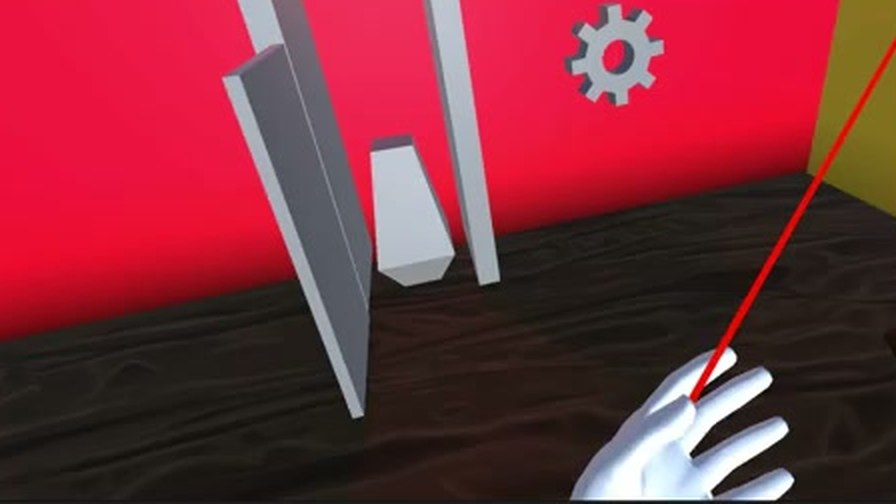
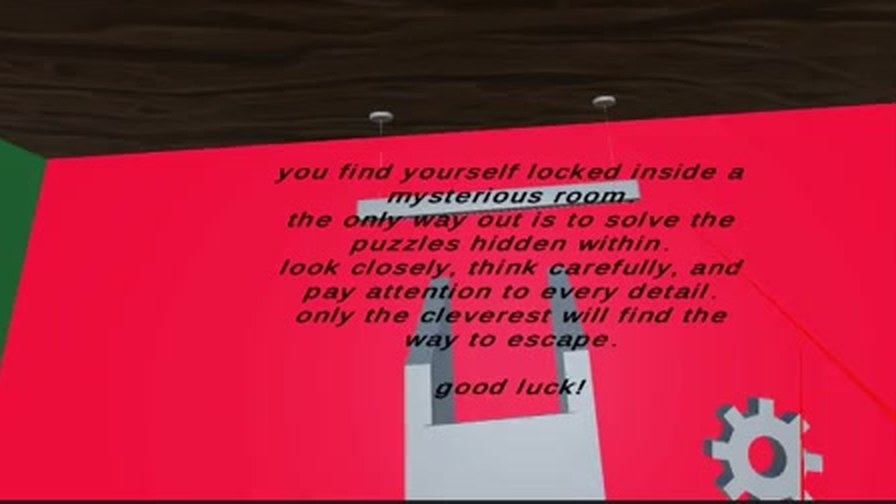
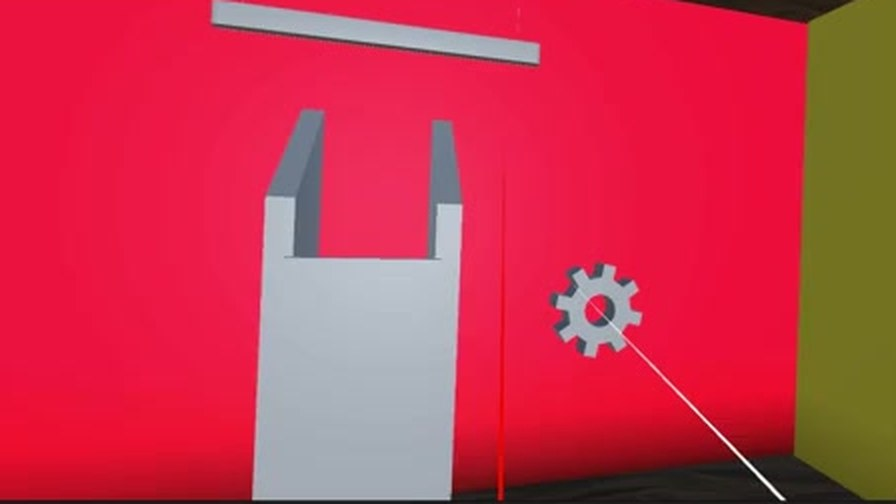
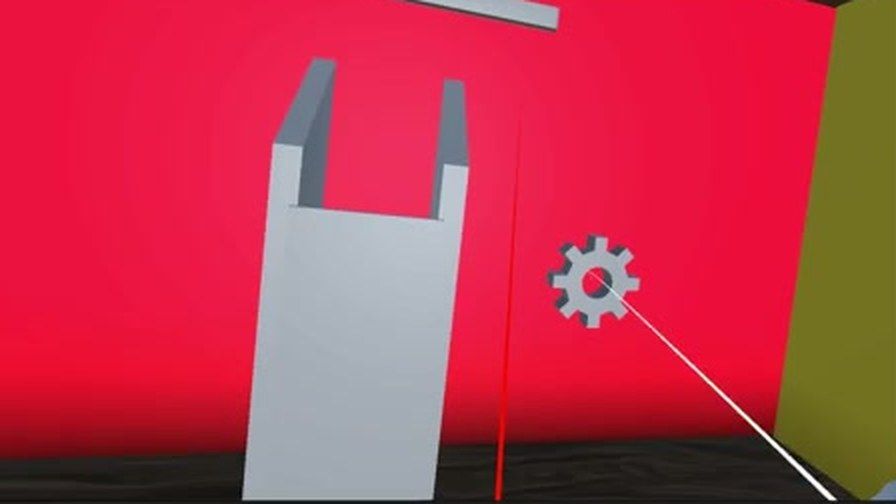
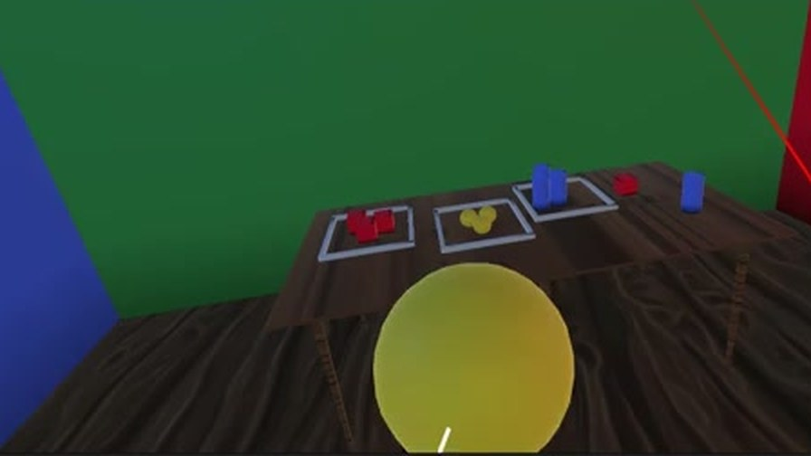
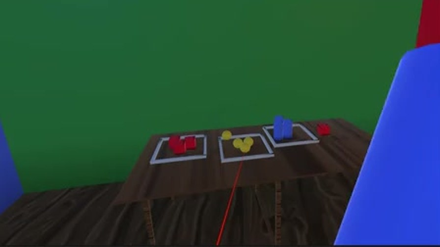
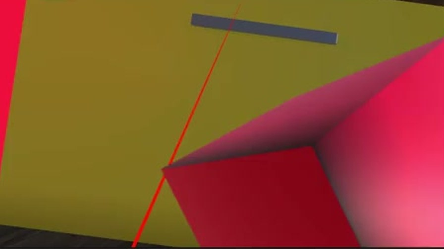

2025 · 项目
VR Escape Room
在 VR 里做谜题、交互与流程状态机
Unity / VR 密室逃脱项目。我负责 VR 交互设计、关卡谜题逻辑、用户体验优化与游戏主流程的状态机控制，并独立完成全部 3D 资产制作。玩家被锁在一间神秘的房间里，唯一的出路是解开隐藏在房间中的谜题。
- 担任
- VR 游戏设计师兼核心开发者
- 团队
- 个人项目
- 周期
- 2025.02 – 2025.06
- 引擎 / 工具
- Unity + C# / Blender / Autodesk Fusion
- 类型
- VR 交互与谜题设计
- 状态
- 已完成课程项目

Overview
项目概述
VR Escape Room 是一个 Unity + VR 的密室逃脱项目。开场叙事把目标交代得很直接：
You find yourself locked inside a mysterious room.
The only way out is to solve the puzzles hidden within.
Look closely, think carefully, and pay attention to every detail —
only the cleverest will find the way to escape.
Good luck!
我在团队中担任 VR 游戏设计师兼核心开发者，负责的范围覆盖交互、谜题、体验和流程四个层面。

Role
我的职责
| 方向 | 具体工作 |
|---|---|
| VR 交互 | 用 Unity 与 C# 开发互动式 VR 游戏，构建高沉浸感的虚拟环境与符合直觉的 VR 手势交互。 |
| 谜题与流程 | 全权负责关卡解谜逻辑、用户体验（UX）优化，以及游戏主流程的状态机控制。 |
| 3D 资产 | 用 Blender 与 Autodesk Fusion 完成 3D 资产的建模、材质处理与动画制作，并无缝导入引擎。 |
| 团队交付 | 在团队开发环境中紧密协作，推进项目进度，保证所有里程碑节点的高质量交付。 |
为什么用状态机管理流程
VR 密室逃脱的流程比普通关卡更容易失控：玩家可能同时触发多个交互、中途摘下头显、
或者在谜题未完成时移动到下一个区域。把主流程收敛成显式状态机，是为了让
"当前处于哪个阶段、哪些交互应该可用"永远有唯一答案，
而不是散落在各个物件的 Update() 里互相打架。
Rooms & Interaction
房间与交互
关卡由多个用颜色做了强区分的房间构成。这种做法在 VR 里尤其有效： 玩家没有小地图可看，颜色是他建立空间记忆最直接的抓手—— 回头找路时，他记住的是"那面红墙的房间"，而不是抽象的方向。


交互设计的核心问题
VR 里没有鼠标指针。玩家判断一个物件能不能交互，完全依赖它的造型、位置和现有反馈。 所以"可交互性"必须在场景美术阶段就被设计进去，而不是等到交互逻辑写完再回头补—— 这也是我在这个项目里最花时间的一处权衡。
Puzzle Mechanics
谜题机制
谜题按"观察 → 操作 → 反馈"三段来设计，且刻意控制了思考步数。



难度预算比平面游戏更低
戴着头显做空间推理的认知负担明显高于平面游戏：玩家要同时处理真实身体的平衡、 手柄的握持、以及虚拟空间里的方位。所以我把谜题的"思考步数"控制在比同等难度的 2D 关卡更少的水平，把难度转移到观察的细致程度上—— 线索都看得见，但需要真的留意细节。这也正好呼应了开场那句 "look closely, think carefully, and pay attention to every detail"。
Takeaways
反思
流程控制是 VR 项目里最容易被低估的工作
在平面游戏里，一个"现在还不能用"的交互按钮，玩家按了没反应通常也能理解。 但在 VR 里，玩家的手是真的伸过去了——没有反馈会被解读成"这游戏坏了"。 把主流程写成显式状态机之后，我才能保证每个阶段的可交互物集合是确定的， 并且能给"暂时不可用"提供明确反馈。
UX 优化的实际工作量往往超过谜题本身
抓取手感、手腕角度、物件吸附范围这些细节，才是决定体验评价的部分。 谜题逻辑一旦跑通就基本不再变动，但这些手感参数我一直在反复调。
页面里的截图来自当时的 Unity 编辑器录屏（原始画质 854×480）。 它们记录了真实的交互与谜题状态，但分辨率不高——如果你之后找到更高清的录屏或头显内录， 给我我替换掉。